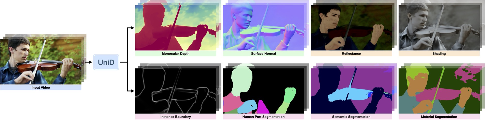

Executive Summary
로봇·AR·콘텐츠 편집은 한 장면을 기하(깊이·표면 법선)와 외형(알베도·셰이딩·재질)과 의미(분할·경계·사람 파트)로 한꺼번에 읽는 능력을 요구한다. 그런데 이 여덟 가지 라벨이 하나의 데이터셋에 모두 갖춰진 경우는 사실상 존재하지 않는다. 깊이·법선은 값싸게 대량으로 얻지만 실내에 갇히고, 시맨틱 분할은 이미지 한 장에 사람 손으로 붙이는 비싼 라벨이라 소규모에 머물며, 알베도·셰이딩 같은 intrinsic 분해는 현실 촬영으로 정답을 얻기가 거의 불가능해 합성 렌더링에 의존한다. 라벨이 서로 다른 도메인·규모·비용 구조에 흩어져 있는 이 상태 — 논문이 disjoint annotation이라 부르는 것 — 이 통합 장면 이해의 진짜 병목이다. 이 보고서는 그 병목이 아키텍처가 아니라 데이터에 있다는 관점에서 UniD를 읽는다.
UniD(Adobe Research·Cornell, ECCV 2026)의 기여는 이 파편을 새 데이터 수집이 아니라 표현 학습으로 메운 데 있다. 라벨을 겹치게 만들지도, 서로의 라벨을 가짜로 채우지도 않는다. 대신 태스크마다 먼저 latent 표현을 학습하고, web-scale로 사전학습된 생성형(diffusion) 사전지식이 도메인 갭을 건너뛰게 한 뒤, 경량 증류(distillation)로 여덟 태스크를 하나의 백본에 통합한다. 결과가 이 관점을 뒷받침한다. 따로 예측하면 기하적으로 어긋나던 깊이와 법선이 하나의 백본에서 나와 서로 정합하고, 합성으로만 배운 intrinsic 표현이 실사 벤치마크로 전이된다.
동시에 한계도 정직하게 드러난다. 기하 과제는 통합이 이득이지만, 시맨틱 분할·재질처럼 고차 의미가 필요한 과제는 통합 직후 성능이 떨어졌다가 경량 보정으로 상당 부분 회복하되 전문가 수준엔 못 미친다. 페블러스의 관점에서 이 연구가 값진 이유는 결론이 아니라 전제다. 데이터의 완전성·정합성 결핍이 모델 능력의 실질적 상한이고, 잘 정돈된 표현이 그 결핍을 메우는 우회로가 된다 — AI-Ready Data와 DataClinic이 겨냥하는 지형 그 자체다.
39.0 vs 14.1
깊이↔법선 기하 정합성
따로 예측하면 어긋나던 두 기하가 통합 모델에선 약 2.8배 더 정합 (Table 7)
28% 낮음
실사 OOD albedo 오차 (IIW WHDR)
0.207 vs 0.289 — 합성으로 배운 표현이 실사로 전이된 증거 (Table 4)
약 8배
학습 GPU 메모리 절감
latent 증류로 약 650GB → 78GB. 여덟 전문가를 한 백본으로 접는 효율
37.8 → 58.4
시맨틱 분할 mIoU (전문가 64.1)
통합 직후 하락, 경량 보정으로 회복하나 전문가엔 미달 — 정직한 비대칭 (Table 5)

한 데이터셋에 다 담기지 않는 것들
결론부터 말하면, 한 모델로 장면 전체를 읽는 일이 어려웠던 이유는 아키텍처가 부족해서가 아니라 데이터가 흩어져 있어서다. 장면을 완전히 이해하려면 깊이·표면 법선 같은 기하, 알베도·셰이딩·재질 같은 외형(intrinsic), 시맨틱 분할·경계·사람 파트 같은 의미를 동시에 읽어야 한다. 문제는 이 여덟 가지 라벨이 한 이미지에 나란히 붙어 있는 데이터셋이 사실상 없다는 데 있다. 각 라벨은 저마다 다른 도메인, 다른 규모, 다른 비용 구조 위에서 따로 자랐다.
세 갈래가 갈라지는 이유는 라벨을 얻는 방식이 근본적으로 다르기 때문이다. 깊이·법선은 RGB-D 센서가 자동으로 찍어 주니 값싸게 대량으로 쌓이지만, 그 센서가 실내에서만 잘 작동해 데이터가 실내에 갇힌다. 시맨틱 분할은 사람이 픽셀 하나하나를 손으로 칠해야 해서 이미지 한 장에 90분 안팎이 들고, 그래서 도로·인터넷 이미지 같은 소규모 집합에 머문다. 알베도·셰이딩 같은 intrinsic 분해는 "물체 고유의 색과 조명 효과를 분리한 값"인데, 이것을 현실 촬영으로 정확히 측정하는 일이 거의 불가능해 합성 렌더링(Hypersim 같은)으로만 정답을 얻는다.
1.1규모와 비용이 제각각인 여덟 파편
파편화의 크기는 숫자로 드러난다. 태스크별 학습 규모는 22.0k에서 121.3k 프레임까지 최대 5.5배 벌어지고, 라벨 하나를 만드는 비용은 합성 렌더링의 7초와 수동 시맨틱 분할의 90분 사이에서 771배까지 차이가 난다. 비디오로 가면 격차는 더 심해진다. 여덟 종 가운데 비디오 프레임 단위 라벨을 가진 것은 깊이·경계·시맨틱 분할 셋뿐이고, 나머지는 정지 이미지에만 존재한다. 아래 표는 이 세 축(도메인·규모·비용)이 얼마나 어긋나 있는지를 정리한 것이다.
| 라벨 계열 | 대표 태스크 | 라벨 획득 방식 | 도메인 한계 | 비디오 |
|---|---|---|---|---|
| 기하 | 깊이 · 표면 법선 | RGB-D 센서 자동 취득 (값쌈) | 실내 위주 | 깊이 O |
| 의미 | 시맨틱 분할 · 경계 · 사람 파트 | 사람 수동 라벨 (약 90분/장) | 소규모 · 특정 도메인 | 일부 O |
| 외형(intrinsic) | 알베도 · 셰이딩 · 재질 | 합성 렌더링 (약 7초/장) | 합성 도메인에 갇힘 | X |
라벨을 얻는 방식이 다르면 데이터가 갇히는 도메인과 규모도 갈린다. 라벨링 비용은 후속 비교 연구(arXiv:2212.07911)와 Hypersim(ICCV 2021)의 수치를 방향성으로 인용. 태스크별 학습 규모는 22.0k~121.3k 프레임 범위.
시각적으로 보면 이 여덟 조각은 서로 만나지 못하는 섬처럼 흩어져 있다. 어떤 이미지는 깊이 라벨만 있고, 다른 이미지는 분할 라벨만 있으며, intrinsic이 붙은 이미지는 아예 합성 세계에서 왔다. 이 세 섬을 잇는 다리가 없다는 사실이 문제의 전부다.
여덟 dense 라벨은 서로 다른 도메인·규모·비용의 세 섬에 흩어져 있고, 한 이미지에 함께 붙어 있지 않다.
1.2기존 통합 모델의 두 우회로와 그 비용
그동안 이 파편을 다루는 길은 크게 둘이었고, 둘 다 대가가 컸다. 하나는 완전히 공동 라벨된 데이터만 쓰는 것이다. 여덟 라벨이 모두 붙은 이미지만 골라 학습하면 정합성은 보장되지만, 그런 이미지가 거의 없으니 학습 규모가 극단적으로 쪼그라든다. 다른 하나는 pseudo-labeling, 즉 한 태스크의 모델로 다른 태스크의 라벨을 추정해 억지로 채우는 것이다. 규모는 맞출 수 있지만 추정 라벨의 오류가 그대로 학습에 섞여 들어가 오류가 누적된다. 두 우회로 모두 "데이터가 흩어져 있다"는 근본 문제를 정면으로 풀지 못한 채, 규모나 정확도 한쪽을 포기한 타협이었다.
이 파편화가 왜 데이터 엔지니어링의 문제인지는 이미 페블러스가 다룬 적이 있다. 완벽하게 라벨된 데이터를 단순히 합친다고 통합이 좋아지지 않는다는 사실은 로봇 데이터 큐레이션 편에서 이미 관찰됐다. UniD는 여기서 한 발 더 나아가, 애초에 라벨을 겹치거나 채우지 않고도 통합하는 세 번째 길을 제시한다.
핵심은 통합의 병목이 모델 설계가 아니라 데이터의 구조라는 점이다. 여덟 라벨이 서로 다른 도메인·규모·비용의 섬에 흩어져 있는 한, 아무리 큰 백본을 얹어도 "한 장면을 통째로 읽는" 능력은 데이터가 허락하는 만큼만 자란다. 문제를 다시 세우면, 질문은 "어떤 아키텍처가 좋은가"가 아니라 "흩어진 라벨을 어떻게 이을 것인가"가 된다.
왜 생성형 사전학습인가 — 외형에 불변인 기하
UniD의 첫 번째 결정은 여덟 태스크를 곧바로 하나의 백본에 몰아넣지 않는 것이다. 대신 태스크마다 먼저 latent 표현을 따로 학습한다. 이유는 일반화에 있다. 태스크별 latent 공간을 각각 충분히 학습해 두면, 학습 때 못 본 예시(unseen)로의 일반화를 먼저 확보한 상태에서 통합에 들어갈 수 있다. 흩어진 데이터로 곧장 공유 백본을 학습하면 각 태스크가 자기 도메인의 좁은 편향까지 통째로 백본에 새기지만, 태스크별 latent를 먼저 다듬으면 통합 단계가 "이미 잘 정리된 표현"을 재구성하는 문제로 단순해진다.
2.1판별형은 외형에 과적합한다
두 번째 결정이 이 논문의 지적 심장이다. UniD는 태스크별 표현의 바탕으로 판별형(discriminative) 특징이 아니라 web-scale로 사전학습된 생성형(diffusion) 사전지식을 쓴다. 왜일까. 판별형 특징은 "이 픽셀이 어떤 클래스인가"를 맞히도록 학습되는데, 그 과정에서 학습 데이터에 우연히 존재하는 외형과 기하의 상관까지 함께 외운다. 예를 들어 "이런 질감의 표면은 대개 이 각도로 놓여 있더라" 같은 통계적 지름길이다. 이런 지름길은 학습 도메인 안에서는 정답을 잘 맞히게 해 주지만, 도메인이 바뀌어 외형과 기하의 상관이 달라지는 순간 무너진다.
생성형 사전학습은 다른 것을 배운다. 이미지를 처음부터 그려내도록 학습된 모델은 "외형이 어떻든 이 기하는 이렇게 생겼다"는, 외형에 불변인(appearance-invariant) 기하를 인코딩한다. 조명이 바뀌고 재질이 바뀌어도 공의 둥근 형태 자체는 변하지 않는다는 감각을, 생성형 사전지식이 이미 품고 있는 것이다. 그래서 이 표현 위에 태스크 latent를 얹으면, 학습 때 보지 못한 도메인으로도 기하 정보가 전이된다. UniD가 "새 데이터를 모으지 않고도" 도메인 갭을 건너뛸 수 있는 이론적 근거가 바로 여기 있다.
판별형은 외형-기하 상관이라는 지름길에 기대고, 생성형 사전학습은 외형에 독립적인 기하를 학습한다. 도메인 전이에서 갈리는 지점이다.
2.2합성으로 배운 것이 실사로 건너간다
이 주장이 말잔치로 끝나지 않는 이유는 실증이 붙기 때문이다. 앞서 봤듯 알베도·셰이딩 같은 intrinsic 라벨은 합성 렌더링 도메인에만 존재한다. 만약 판별형 지름길에 기댄 모델이라면 합성으로 배운 것을 실사에 적용할 때 무너져야 한다. 그런데 UniD는 실사 intrinsic 벤치마크 IIW에서 albedo 오차(WHDR)가 대표 baseline 대비 약 28% 낮았다(0.207 vs 0.289). 합성 세계에서만 정답을 본 표현이, 한 번도 학습하지 않은 실사 사진에서 더 정확했다는 뜻이다. "외형-불변 기하" 가설이 예측한 그대로의 결과다.
이 통찰은 통합 비전 표현의 계보 위에 있다. 생성형 사전지식을 지각(perception)으로 되돌려 쓰는 흐름은 Marigold·DepthAnything·GeoWizard 같은 diffusion-for-perception 연구가 다져 왔고, 여러 교사의 표현을 하나로 증류하는 시도는 Meta EUPE 편에서 살펴본 통합 인코더 계보와 맞닿는다. UniD는 그 두 흐름을 "흩어진 라벨"이라는 데이터 조건 위에서 결합한다.
데이터 관점에서 이 절의 함의는 분명하다. 라벨이 어떤 도메인에 갇혀 있느냐만큼이나, 그 라벨을 무엇으로 표현하느냐가 전이를 좌우한다. 같은 합성 intrinsic 데이터라도 외형에 과적합한 표현에 담으면 실사로 건너가지 못하고, 외형에 불변인 표현에 담으면 건너간다. 데이터 품질이 모델 내부 표현을 결정한다는 명제의, 꽤 구체적인 사례다.
여덟 태스크를 하나의 백본에 — 2단계 증류
태스크별 latent 표현이 준비되면, 남은 문제는 이 여덟 표현을 하나의 공유 백본으로 접는 일이다. UniD의 통합은 라벨을 겹치게 하거나 pseudo-label로 채우는 대신 2단계 증류(distillation)로 이뤄진다. ① 태스크별로 학습한 표현(전문가)을 먼저 확보하고, ② 하나의 공유 백본이 그 표현들을 재구성하도록 경량 per-task projector와 지식 증류로 통합한다. 각 태스크는 백본 뒤에 얇은 projector 하나씩만 달아 자기 출력을 뽑고, 백본 자체는 여덟 태스크가 공유한다.
아래 도식은 이 2단계 구조를 원본 논문 그림 대신 페블러스 테마로 재해석한 것이다. 왼쪽은 태스크마다 따로 학습된 표현(1단계), 오른쪽은 그것을 재구성하는 공유 백본과 태스크별 projector(2단계)다.
UniD 2단계 증류. 라벨을 겹치거나 채우지 않고, 태스크별 표현을 공유 백본이 재구성하도록 증류한다. (논문 figure 재해석)
3.1비디오를 다루는 방식 — extended self-attention
UniD가 "비디오" 밀집 예측인 이유는 단일 프레임을 따로 처리하지 않기 때문이다. extended self-attention으로 여러 프레임의 특징을 함께 참조해, 한 프레임의 예측이 앞뒤 프레임과 맥락을 공유하도록 만든다. 이 설계가 뒤에서 볼 시간적 일관성(temporal consistency) 이득의 바탕이 된다. 따로 예측한 프레임들을 이어 붙이면 깜빡임이 생기지만, 프레임 간 맥락을 공유하면 예측이 시간 축으로 매끄러워진다.
3.2여덟 전문가를 한 백본으로 접는 비용
2단계 증류의 실무적 이점은 자원에서 드러난다. 여덟 태스크의 표현을 한꺼번에 백본에 밀어 넣으려면 학습 시 모든 전문가를 동시에 메모리에 올려야 해 GPU 메모리가 폭증한다. UniD는 latent 증류로 이 부담을 크게 줄여, 학습 GPU 메모리를 약 650GB에서 78GB로 낮췄다 — 약 8배 절감이다. 여덟 전문가를 따로 유지·배포하는 대신 하나의 공유 백본으로 접는다는 것은, 서빙 단계에서도 여덟 번 추론할 것을 한 번으로 줄인다는 뜻이다.
2단계 증류의 진짜 미덕은 "겹침도 가짜 라벨도 없이" 통합했다는 데 있다. 데이터를 인위적으로 만들어 붙이지 않고, 이미 흩어져 있는 라벨 각각을 잘 표현해 두면 공유 백본이 그 표현을 재구성하며 자연스럽게 이어진다. 부족한 데이터를 지어내는 대신, 있는 데이터를 잘 정돈하는 쪽을 택한 설계다.
기하는 이득, 의미는 아직 손해
통합이 실제로 손해인지 이득인지는 과제 성격에 따라 갈린다. UniD의 결과를 한 문장으로 요약하면 기하는 통합이 이득, 의미는 아직 손해다. 이 절은 그 비대칭을 균형 있게 살핀다. 먼저 이득 쪽부터 보면, 깊이는 다섯 개 벤치마크 전부에서 대표 파운데이션 백본(DINOv3-H)을 상회했고, ScanNet 깊이에서는 개별 전문가(AbsRel 0.069)보다 통합 모델(0.063)이 더 정확했다. 통합했는데 전문가보다 나아졌다는 것은, 여덟 태스크가 서로의 학습을 방해하기는커녕 기하 표현을 함께 다듬었다는 뜻이다.
| 지표 (벤치마크) | UniD 통합 | 개별 전문가 | DINOv3-H† | 읽는 법 |
|---|---|---|---|---|
| 깊이 AbsRel (NYUv2) | 0.059 | – | 0.092 | 낮을수록 좋음 · 통합 우위 |
| 깊이 AbsRel (ScanNet) | 0.063 | 0.069 | – | 낮을수록 좋음 · 통합이 전문가보다 우위 |
| 깊이↔법선 정합성 | 39.0 | 14.1 | – | 높을수록 좋음 · 약 2.8배 정합 (Table 7) |
| albedo WHDR (IIW, 실사 OOD) | 0.207 | 0.289 | – | 낮을수록 좋음 · 28% 낮음 (Table 4) |
| 법선 시간 일관성 (mVC-16) | 75.8 | – | 63.6 | 높을수록 좋음 · 16프레임 일관성 |
| 시맨틱 분할 mIoU (Cityscapes) | 37.8 → 58.4 | 64.1 | 65.6 | 높을수록 좋음 · 통합 손해, 보정 후에도 미달 (Table 5) |
† DINOv3-H 수치는 UniD와 동일 조건으로 태스크 decoder를 재학습한 값으로, Meta 자체 블로그의 linear-probe 수치(예: Cityscapes 81.1)와는 프로토콜이 달라 직접 비교할 수 없다. "DINOv3가 유독 약하다"는 오독을 피할 것. 벤치마크 수치는 arXiv HTML 원문 기준이며 방향성(우위/열위)은 신뢰, 정확 소수점은 원문 표를 따른다. 출처: UniD arXiv:2607.21592 · DINOv3 arXiv:2508.10104.
4.1백미는 cross-task 정합성이다
통합의 가장 극적인 가치는 개별 점수가 아니라 태스크 사이의 정합성에 있다. 깊이와 법선은 원래 같은 표면의 두 얼굴이다 — 깊이의 기울기가 곧 법선이어야 한다. 그런데 둘을 따로 예측하는 전문가 모델에서는 이 둘이 기하적으로 어긋난다. 깊이가 그린 표면과 법선이 그린 표면이 서로 다른 것이다. UniD처럼 하나의 백본에서 둘이 함께 나오면 이 어긋남이 크게 줄어, 정합성 지표가 14.1에서 39.0으로 약 2.8배 올랐다. 로봇이 이 예측으로 물체를 잡거나 AR이 표면에 가상 물체를 얹을 때, 깊이와 법선이 서로 맞아떨어지는지는 곧바로 실무 품질이 된다.
깊이와 법선을 하나의 백본에서 함께 예측하면, 따로 예측할 때 어긋나던 두 기하가 서로 정합한다. (UniD Table 7)
4.2비디오가 길어질수록 벌어지는 이득
통합의 이득은 시퀀스가 길어질수록 커진다. 시간 일관성(temporal consistency)에서 통합 모델이 baseline을 앞서고, 그 격차는 프레임이 쌓일수록 벌어진다(법선 16프레임 일관성 75.8 vs 63.6). 효율에서도 흥미로운 역전이 일어난다. 단일 프레임만 보면 DINOv3-H가 더 빠르지만, 16프레임 맥락을 함께 처리하는 비디오 상황에서는 통합 모델이 1.56 FPS로 baseline의 0.69 FPS보다 약 2.3배 빨랐다. 여덟 전문가를 따로 돌리는 specialist 구성은 단일 프레임에서도 가장 느리다(1.17 FPS). 하나의 백본으로 접는 설계가 긴 비디오·다중 태스크 상황에서 속도까지 되돌려 받는 것이다.
생성 영상의 프레임 간 물리·기하 일관성이 왜 중요한지는 월드모델 물리 검증 편에서 다룬 바 있다. UniD의 시간 일관성 이득은 그 문제의식과 같은 지형에 있다 — 프레임마다 따로 예측하면 깜빡이는 신호를, 맥락을 공유해 매끄럽게 만든다.
4.3정직한 한계 — 의미 과제는 통합이 손해다
이득만 말하면 절반의 이야기다. 시맨틱 분할·재질·사람 파트처럼 고차 의미가 필요한 과제는 통합 직후 뚜렷이 하락했다. Cityscapes 시맨틱 분할 mIoU는 통합 직후 37.8로, 개별 전문가(64.1)에 한참 못 미쳤다. 경량 projector 파인튜닝으로 58.4까지 회복했지만, 그래도 전문가나 DINOv3-H(64.1/65.6) 수준엔 도달하지 못한다. 기하는 여덟 태스크가 서로를 도왔지만, 의미는 통합이 오히려 방해가 됐다는 뜻이다. 여기에 실무 리스크가 하나 더 있다. 확인 시점 기준 코드는 미공개다. GitHub 저장소(YihongSun/UniD)는 존재하나 "Code Release TBA"로 README와 프로젝트 페이지 링크만 있다(star·fork 수는 확인 시점 기준으로 변동 가능). 방법은 arXiv 논문으로 검토할 수 있지만, 지금 당장 돌려 볼 수는 없다.
그래서 실무의 교훈은 "통합이 만능"이 아니다. 깊이·법선 같은 기하와 cross-task 정합성이 중요한 로봇·AR 인식에는 통합이 명백한 이득이지만, 시맨틱 분할·재질 같은 의미 과제가 핵심이라면 아직은 전문가 모델이 낫다. 과제 성격에 따라 통합과 전문가를 선택해야 한다는 이 비대칭 자체가, 통합 학습이 언제 통하고 언제 실패하는지를 미리 판별할 필요를 만든다.
왜 이것이 데이터 품질의 문제인가
UniD를 데이터의 눈으로 다시 읽으면, 이 연구가 던지는 메시지는 CV 논문 한 편의 성능표를 넘어선다. 출발점이 "완전히 라벨된 단일 데이터셋이 없다"는 데이터 현실이었고, 해법이 "새로 모으지 않고 있는 것을 잘 표현한다"는 데이터 전략이었기 때문이다. 데이터의 완전성(completeness)과 정합성(consistency) 결핍이 모델 능력의 실질적 상한을 만들고, 잘 정돈된 표현이 그 결핍을 메우는 우회로가 된다 — 이것이 이 글 전체를 관통하는 관점이다.
5.1표현이 전이를 결정한다
2절에서 본 통찰 — 판별형은 외형 편향에 과적합하고, 생성형 사전학습은 외형에 불변인 기하를 인코딩한다 — 은 "학습 데이터의 편향이 모델 내부 표현에 어떻게 각인되는가"의 정교한 사례다. 같은 합성 intrinsic 데이터라도 어떤 표현에 담느냐에 따라 실사로 건너가기도 하고 무너지기도 한다. 데이터 품질을 "라벨이 얼마나 정확한가"로만 보면 놓치는 층위가 여기 있다. 데이터가 무엇을 학습시키느냐는 라벨의 정확도만이 아니라, 그 라벨이 어떤 표현 공간에서 소비되느냐에도 달려 있다.
5.2불완전 라벨을 버리지 않는 파이프라인
멀티태스크·멀티모달 데이터를 다루는 팀은 거의 항상 "라벨이 부분적으로만 있는 데이터"를 마주한다. 어떤 샘플은 분할만, 어떤 샘플은 깊이만 붙어 있다. UniD의 증류 우회는 이런 불완전 라벨 데이터를 버리지 않고 활용하는 파이프라인 설계의 참고 사례다. 다만 4절의 비대칭이 경고하듯, 통합은 만능이 아니다. 기하 과제에는 이득이지만 의미 과제에는 손해일 수 있고, 합성으로 배운 표현이 실사로 전이될지도 과제와 데이터에 따라 달라진다. 이 응용이 겨냥하는 지형 — 로봇이 장면을 기하·의미·재질로 동시에 읽는 Physical AI 인식 스택 — 은 로봇 비전이 2025년 신규 로봇 설치의 38%로 올라선(IFR) 수요 곡선 위에 있다.
"모델 통합의 병목은 아키텍처가 아니라 데이터의 파편화"라는 프레임은, 데이터 정합성·완전성 문제를 검증 가능한 지표로 진단하는 일의 가치를 다시 확인시킨다. UniD는 표현 학습으로 그 결핍을 우회했지만, 그 우회의 성패 자체가 데이터 품질에 달려 있다 — 합성 편향이 어디까지 전이되는가, 어느 과제에서 통합이 손해인가. 통합 학습이 언제 통하고 언제 실패하는지를 사전에 판별하는 일이, 파편화된 데이터 시대의 실무 과제로 남는다.
Editor's Note
페블러스는 AI-Ready Data와 DataClinic으로 파편화·불완전 라벨 데이터의 품질을 진단하는 문제를 다뤄 왔다. UniD가 보여준 "데이터 결핍을 표현으로 메운다"는 접근은, 데이터를 새로 만드는 것과 있는 데이터를 잘 정돈하는 것 사이에서 후자의 가능성을 넓힌 사례로 읽는다. 이 글은 그 관점에서 UniD를 정리한 리서치 노트다.
페블러스 데이터 커뮤니케이션팀
2026년 7월 31일
참고문헌
핵심 논문 · 데이터셋
- 1.Sun, Y., Oh, S.W., Huang, J., Hariharan, B., Lee, J.Y. "Unified Video Dense Prediction from Disjoint Data" (UniD), arXiv:2607.21592 (2026), ECCV 2026.
- 2.Roberts, M., Paczan, N., et al. "Hypersim: A Photorealistic Synthetic Dataset for Holistic Indoor Scene Understanding," ICCV 2021.
- 3.Cordts, M., et al. "The Cityscapes Dataset for Semantic Urban Scene Understanding," CVPR 2016 (라벨링 비용 인용은 후속 비교 연구 arXiv:2212.07911).
인접 계보 — 통합 표현 · diffusion-for-perception
- 4.Meta AI. "DINOv3: Self-supervised learning for vision at unprecedented scale," arXiv:2508.10104 · Meta AI 블로그.
- 5.Ke, B., et al. "Marigold: Repurposing Diffusion-Based Image Generators for Monocular Depth Estimation," CVPR 2024 · Depth Anything V1·V2 · GeoWizard (diffusion-for-perception 흐름).
프로젝트 · 코드 · 업계
- 6.UniD 프로젝트 페이지: unid-video.github.io · GitHub(코드 미공개, README만): YihongSun/UniD.
- 7.International Federation of Robotics(IFR) — vision-equipped robot 설치 비중(2025년 38%, 방향성 인용) · Fortune Business Insights 로보틱 비전 시장 리포트.
- 8.NVIDIA Isaac GR00T — 로보틱스 통합 인식 프레임워크 (GTC 2026, 업계 맥락).